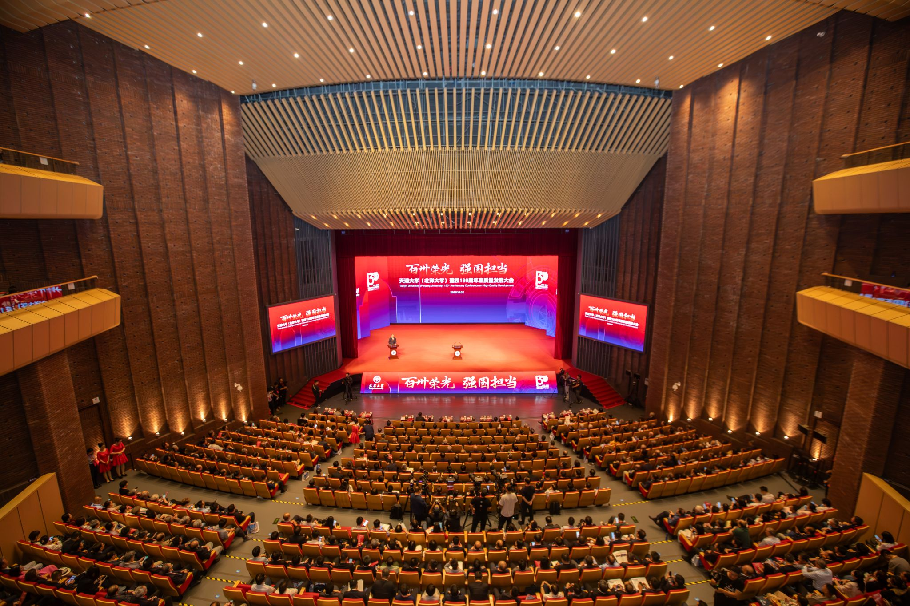
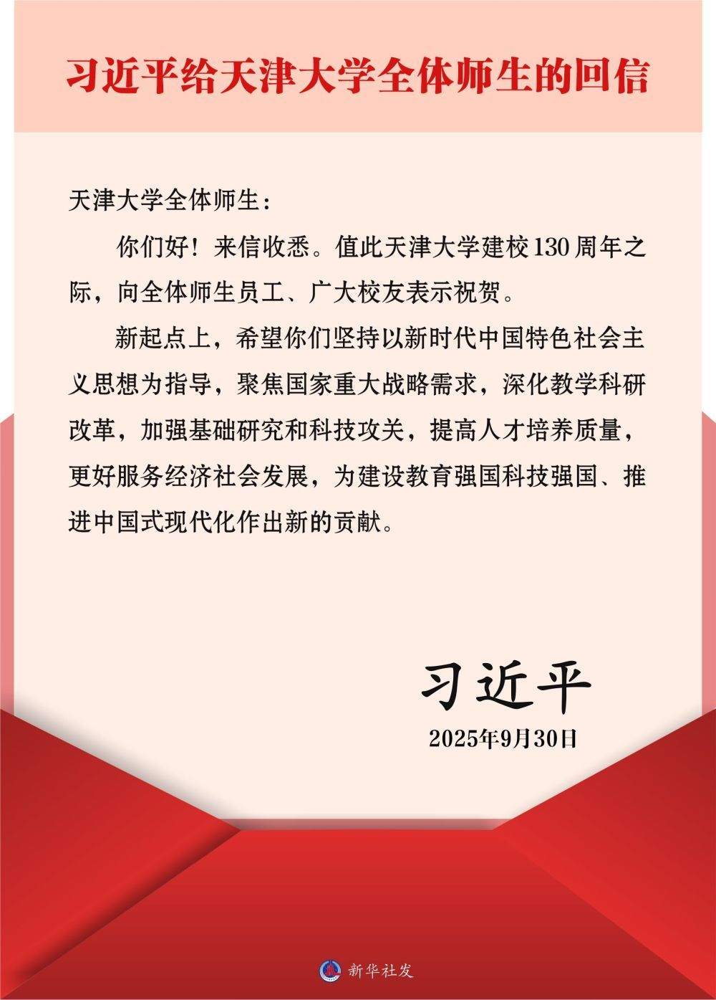
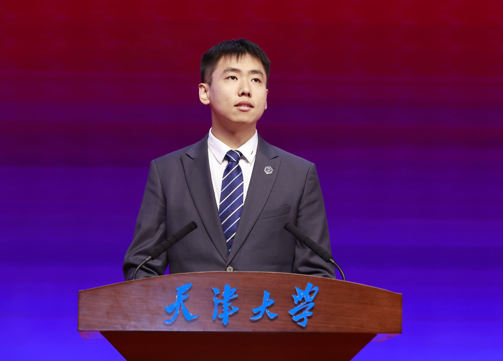

习近平给天津大学全体师生的回信
天津大学全体师生：
你们好！来信收悉。值此天津大学建校130周年之际，向全体师生员工、广大校友表示祝贺。
新起点上，希望你们坚持以新时代中国特色社会主义思想为指导，聚焦国家重大战略需求，深化教学科研改革，加强基础研究和科技攻关，提高人才培养质量，更好服务经济社会发展，为建设教育强国科技强国、推进中国式现代化作出新的贡献。
习近平
2025年9月30日
一封回信，标注奋进坐标；一次实践，回答青春何为。沿着“读信—解码—入专业—访党员—见行动”的路径，把殷切嘱托转化为可感、可知、可行的青春答卷。
130YEARS
From 1895 to 2025
天津大学前身为北洋大学，始建于 1895 年 10 月 2 日，是中国第一所现代大学。跨越三个世纪，变的是时代命题，不变的是把学校发展、个人成长与国家前途紧紧相连。

2025 · 09 · 30
回信篇幅凝练，却为学校面向未来的发展指明方向，也向青年提出时代之问：在教育强国、科技强国建设中，我们能够贡献什么？

天津大学全体师生：
你们好！来信收悉。值此天津大学建校130周年之际，向全体师生员工、广大校友表示祝贺。
新起点上，希望你们坚持以新时代中国特色社会主义思想为指导，聚焦国家重大战略需求，深化教学科研改革，加强基础研究和科技攻关，提高人才培养质量，更好服务经济社会发展，为建设教育强国科技强国、推进中国式现代化作出新的贡献。
习近平
2025年9月30日
Reading the letter
回信不是抽象口号，而是一张从办学治校延伸到青年成长的行动图谱。点击每一项，展开我们的理解。
Three missions
回信把人才培养、科技创新与服务发展连接成一个完整闭环：教育夯实根基，科技塑造动能，人才创造未来。
落实立德树人根本任务，以改革提高培养质量，让更多青年在真实问题中练本领、长才干。
面向基础前沿和关键核心技术，强化有组织科研，让原创成果成为高质量发展的新动能。
把个人理想融入强国建设，让专业选择、学习方向和实践行动同国家需要同频共振。
My major, my answer
国家重大战略并不遥远，它就在每个专业正在回答的问题里。选择你的专业方向，找到一条可行动的连接。

Dialogue with party members
回信精神怎样进入教学、科研、成长与服务现场？实践队可面向五类优秀党员开展专题采访，让宏大命题落到真实岗位与具体行动。
从“兴学强国”传统出发，胸怀“国之大者”，把立德树人落到办学实践。
把电子信息专业学习与智能算法研究结合，在科研攻关中践行报国志向。
加强理论研究和思政课建设，以党的创新理论铸魂育人。
以卫星数据服务气象、航海、航空等场景，让科技成果更好服务社会。
教学科研改革如何真正落到人才培养中？
关键词：育人 · 改革青年如何把个人理想融入国家需要？
关键词：选择 · 担当基础研究和科技攻关最需要怎样的坚守？
关键词：原创 · 攻关产业一线期待高校培养什么样的人才？
关键词：转化 · 协同平凡岗位如何体现育人使命和党员担当？
关键词：服务 · 坚守Practice route
把一次主题学习做深、做实，需要完整证据链：研读笔记、采访提纲、原始记录、授权确认、专业行动和传播作品缺一不可。
通读原文，圈画关键词，形成集体研读笔记。
结合专业提出真问题，确定对象与采访主题。
取得授权，记录党员群体来自一线的真实回答。
整理逐字稿，核对事实与引语，提炼共识。
完成一项与专业相关、可验证的小实践。
用 H5 讲好实践故事，让回信精神可感可见。
Youth in action
最有力量的学习，不止于理解，更在于行动。勾选你愿意完成的事项，生成一份属于自己的青年行动宣言。
Verified sources
本作品依据新华社、教育部、天津大学官网等公开权威资料制作。点击卡片可查阅原文。